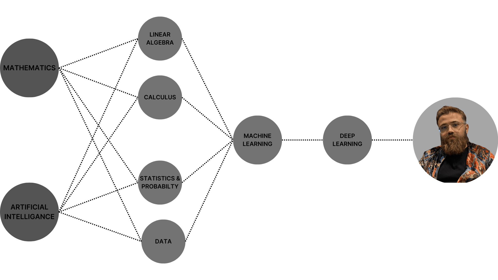

KEMAL KILIÇASLAN
AI Engineer
I'm Kemal, I live in Ankara. After graduating from Kastamonu University, Department of Mathematics in 2022 with a 2.8/4 GPA, I sought to develop my skills through online courses, focusing on areas that form the foundation of artificial intelligence, such as numerical analysis, probability, statistics, and Python programming. Simultaneously, I freelanced, collaborating with various stakeholders to support their strategic goals. My goal is to apply the core knowledge gained from my mathematics education to the fields of artificial intelligence, machine learning, deep learning, and image processing, and to develop a passion for sharing what I have learned with others. I devoted a significant amount of time to self-study, diligently learning the Python programming language, researching various topics related to algorithms and artificial intelligence. I actively interacted with online resources, completed relevant courses and carried out personal projects to practically apply my knowledge. I also explored the intricacies of image processing, especially computer vision, due to my growing interest. Through consistent effort and dedication, I have developed a strong foundation in AI concepts, especially machine learning, deep learning and computer vision. This comprehensive skill set has enabled me to meaningfully contribute to freelance projects and share my insights and learning experiences with others in the field, demonstrating a continuous commitment to personal development.
